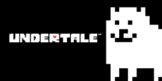

*Para ter ascessoa a todo o conteudo do site
Cadastre-se
LV
0
Bem Vindo ao UndertaleFB
UndertaleFb e um site de fans de UNDERTALE para fans de UNDERTALE, aqui nos temos muitas curiosidades,mini-games tematicos,história do jogo e dos personagens alem de uma aba de comunidade para que você encontre outras pessoas que amam esse incrivel jogo Quer ter ascesso a tudo isso? e bem simples Cadastre-se Site Estamos te Esperando ;)
*Voce percee que ao se cadastrar vai ter muita diversão e isso te enche de DETERMINAÇÃO
